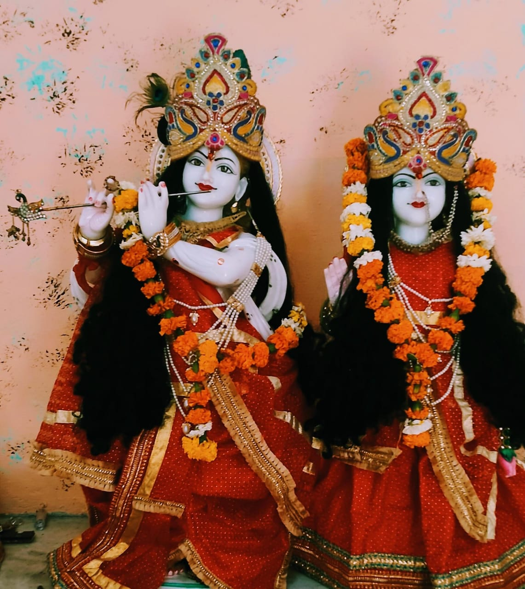

मैं सभी जीवों के हृदय में हूँ, या मैं सभी जीवों के हृदय में रहता हूँ।
Shree Krishna - My Strength


जिनका अज्ञान अपने ही ज्ञान से नष्ट हो जाता है| सूर्य की भांति, उन्हें ज्ञान सर्वोच्च को प्रकट करता है|

यदि अर्जुन तुम युद्ध में वीरगति को प्राप्त होते हो तो तुम्हें स्वर्ग मिलेगा और यदि विजयी होते हो तो धरती का सुख पा जाओगे... इसलिए उठो, हे कौन्तेय (अर्जुन), और निश्चय करके युद्ध करो।

मनुष्य के शरीर में रहने वाला आलस्य ही उनका सबसे बड़ा शत्रु होता है, परिश्रम जैसा दूसरा कोई अन्य मित्र नहीं होता क्योंकि परिश्रम करने वाला कभी दु:खी नहीं होता है।

चिंता से ही दुःख उत्पन्न होते हैं किसी अन्य कारण से नहीं, ऐसा निश्चित रूप से जानने वाला, चिंता से रहित होकर सुखी, शांत और सभी इच्छाओं से मुक्त हो जाता है।

जो न कभी हर्षित होता है, न द्वेष करता है, न शोक करता है, न कामना करता है तथा जो शुभ और अशुभ सम्पूर्ण कर्मों का त्यागी है। वह भक्तियुक्त पुरुष मुझको प्रिय है।
The Divine Essence of Lord Shree Krishna
Lord Shree Krishna, the divine avatar of Lord Vishnu, is the embodiment of love, compassion, and wisdom. His teachings in the Bhagavad Gita are a source of eternal inspiration for humanity. Shree Krishna is the guiding light in our lives, showing us the path of righteousness and devotion.
His enchanting presence brings solace to the troubled hearts and uplifts the spirit. Shree Krishna's divine grace is the strength that carries us through the storms of life and illuminates our darkest hours. His divine flute enchants all living beings, and his smile is like the sun that dispels darkness.
Let us immerse ourselves in the devotion and love for Shree Krishna, seeking His blessings and guidance in our journey towards spiritual enlightenment and inner peace. His divine Leelas (playful activities) continue to inspire and remind us of the path of Dharma and devotion.
The Birth and Childhood
Shree Krishna was born in the prison of Mathura to Devaki and Vasudeva. His divine childhood was marked by playful escapades, such as stealing butter and engaging in pranks, which endeared him to the residents of Vrindavan.
His childhood also included miraculous feats, such as lifting the Govardhan Hill to protect the people from torrential rains. These stories of his early life reflect his divine nature and his role as a protector and source of joy for all.
The Govardhan Leela
One of the most cherished episodes in Lord Krishna's life is the Govardhan Leela. When the people of Vrindavan were preparing to offer their annual worship to Lord Indra, Krishna questioned the need to worship Indra. Instead, he proposed that they worship Govardhan Hill, which provided them with resources.
In response, Lord Krishna lifted Govardhan Hill with his little finger to protect the people from the wrath of Lord Indra's rain. This act of love and devotion to his devotees is a testament to his divine power and the importance of simple faith and surrender.
The Ras Leela
The Ras Leela is a profound and mystical dance of love and devotion. Lord Krishna's dance with the Gopis under the moonlit sky of Vrindavan symbolizes the union of the individual soul with the divine.
The Ras Leela serves as a spiritual metaphor, emphasizing the importance of selfless devotion and surrender to the divine. It is a reminder of the eternal love between Lord Krishna and his devotees.
The Flute of Krishna
The divine flute playing of Lord Krishna is legendary. His melodious tunes enchanted the entire creation, including humans, animals, and even the celestial beings. When he played the flute, the Gopis would be drawn to him, leaving everything behind to be in his divine presence.
The music of his flute symbolizes the call of the divine, the yearning of the soul to unite with the Supreme, and the eternal love of Lord Krishna for his devotees. It's a reminder of the bliss that comes from surrendering to the divine and being in harmony with the universe.
Divine Love of Radha-Krishna
At the heart of Lord Krishna's divine journey lies the sublime love story of Radha and Krishna. Radha, often referred to as "Radha Rani," is regarded as the eternal and supreme devotee of Lord Krishna. Their love transcends the mundane and embodies the divine union of the soul with the Supreme Being.
Their love story, celebrated in songs, poetry, and art, represents the divine connection between the individual soul (jivatma) and the ultimate reality (paramatma). The love of Radha and Krishna symbolizes the profound and selfless devotion one should have for the divine.
Radha-Krishna's love story inspires devotees to seek the highest form of love and surrender to the Lord with unwavering faith and devotion. It is a reminder that true love, both earthly and divine, is the path to spiritual realization and eternal bliss.
The Departure
After fulfilling his earthly mission and guiding humanity, Lord Krishna, often referred to as the "Yogeshwara," left for his divine abode, Dwarka. His departure marked the end of his physical presence on Earth.
However, his spiritual presence and teachings continue to be a guiding light for all who seek wisdom, love, and inner peace. Devotees remember his departure as an opportunity to deepen their spiritual connection through devotion and prayer.
While his physical form may have departed, Lord Krishna's divine influence and love remain eternal and ever-present in the hearts of his devotees.
My Dedication to Krishna
As a devotee of Lord Shree Krishna, I am inspired by his divine presence, teachings, and the enchanting stories of his life. My dedication to Krishna is a heartfelt commitment to walk the path of righteousness, love, and devotion that he has shown us.
Lord Krishna's teachings, especially those in the Bhagavad Gita, are a guiding light in my life, offering wisdom in times of doubt and clarity in times of confusion. His divine Leelas and the enchanting sound of his flute resonate in my heart, reminding me of the eternal love and joy that can be found in his presence.
My dedication to Lord Krishna is a promise to strive for a life filled with love, compassion, and selfless service. His grace is my strength, and his love is my inspiration. In the company of Shree Krishna, I find solace, guidance, and boundless joy.
May my devotion to Lord Krishna continue to deepen, and may his divine blessings illuminate my path as I journey through life, seeking spiritual enlightenment and inner peace.